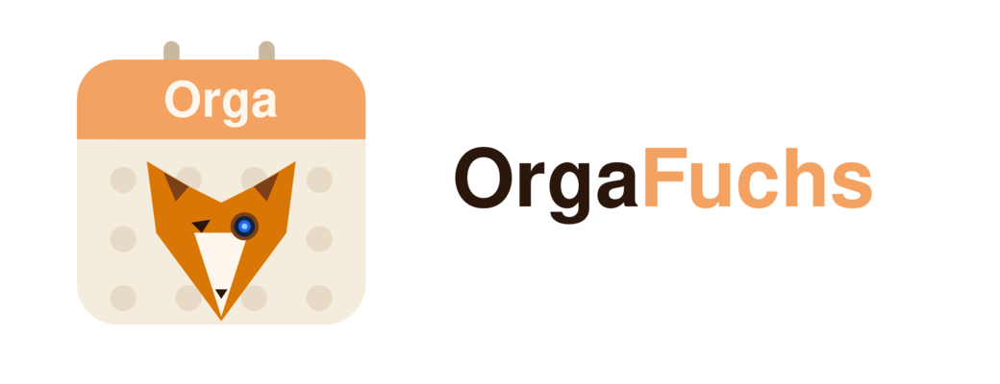

Der lokale Familien- & Team-Planer für Schicht- und Dienstpläne – 100 % offline, mit eigenem Sync ohne Cloud und ohne Konto.
OrgaFuchs plant Dienste, Schichten, Termine und Notizen für die ganze Familie oder ein kleines Team – übersichtlich als Monatskalender, blitzschnell per Schnelleintrag, exportierbar als sauberes PDF. Alle Daten bleiben auf deinen Geräten. Die Synchronisation läuft über dein eigenes Heimnetz oder einen selbst gehosteten Relay – kein Google, keine Cloud, kein Tracking.
Gemacht für Familien mit Schichtarbeit (Klinik/Pflege, Rettungsdienst, Feuerwehr), Paare mit Kinderbetreuung, kleine Teams und Vereine – alle, die einen gemeinsamen Plan wollen, ohne ihre Daten aus der Hand zu geben.
Die erste vollwertige Version – für Android und Windows-Desktop.
Dienste und Termine als Serie anlegen (täglich/wöchentlich/Muster) statt jeden Tag einzeln.
Neben der Monatsübersicht jetzt auch eine Jahresübersicht und eine Blanko-Vorlage zum Ausdrucken.
Feiertage und Schulferien passend zu deinem Bundesland – mit Selbstupdate.
Eigene Transparenz-Seite in der App: was lokal bleibt, was der Sync tut, verwendete Open-Source-Bausteine.
Alle Daten liegen ausschließlich auf dem Gerät (SQLite). Kein Konto, keine Registrierung, keine Cloud.
Ein Gerät ist „Hauptgerät", weitere treten per QR-Code/Passwort bei – im Heimnetz oder über einen selbst gehosteten Relay, Ende-zu-Ende-verschlüsselt.
Ganze Monate im Sekundentakt eintippen – mit haptischem und optischem Feedback.
Eigene Kürzel, Farben und Zeiten: Früh/Spät/Nacht, Bereitschaft, Urlaub, Schule/Hort, Kinderbetreuung – mit Vorlagen für gängige Branchen.
Monat, Jahr und Blanko – druckfertig, wahlweise farbig oder schlicht (S/W), ideal für Kühlschrank und Aushang.
Feiertage und Ferien je Bundesland, Notizen und Termine mit Personenbezug, Jahresauswertung, Backup/Restore und In-App-Logbuch.
Keine CloudKein Google-DienstKein KontoKein TrackingWerbefreiSync selbst hostbar
Details in der Datenschutzerklärung. Anbieter & Rechtliches: Impressum von fehlerfuchs.eu.
Version 1.0.0 (Juli 2026). Die Windows-Version steht zum Download bereit; die Android-Version kommt in Kürze in den Google Play Store – gleiche Daten, gleicher Sync.
Windows-Installer (.exe). Beim ersten Start kann Windows SmartScreen zeigen: „Weitere Informationen" → „Trotzdem ausführen". Der Play-Store-Link erscheint hier, sobald die App freigegeben ist.
Interesse an der Testphase? Melde dich für die OrgaFuchs-Beta – oder stöbere in der Wunschliste.